COMMON QUALITATIVE TESTS IN ORGANIC CHEMISTRY
The standard A-level curriculum in the UK requires the knowledge of tests with the following reagents:
- 2,4-dinitrophenylhydrazine solution
- boiling Fehling's or Benedict's solution
- warm ammoniacal silver nitrate solution, called Tollen's reagent
- phosphorous (V) chloride
- acidified potassium dichromate (VI) solution
- sodium/potassium carbonate or hydrogencarbonate solution
- bromine water
- warm aqueous sodium/potassium hydroxide, dilute nitric acid and aqueous silver nitrate
- small piece of sodium
- warm carboxylic acid with a few drops of concentrated sulphuric acid
- sodium nitrite and dilute hydrochloric acid followed by an alkaline solution of phenol in ice-cold condition
- iodine in alkaline solution
Let's go over them one by one:
-
2,4-dinitrophenylhydrazine solution
for carbonyl functional group
2,4-Dinitrophenylhydrazine is a molecule with a fascinating structure, shown below:
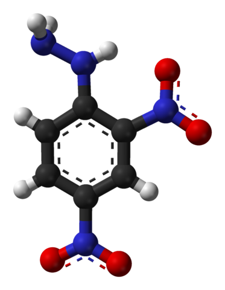 2,4-DNPH can be used to detect the carbonyl functional group of ketones and aldehydes. A positive test is indicated by the formation of a red or reddish yellow precipitate, provided the carbonyl reactant is aromatic or aliphatic respectively:
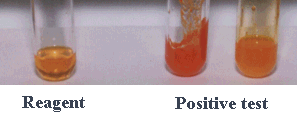
Source: Dr Ian Hunt, University of CalgaryThe reaction can be described as a condensation reaction, since two molecules combine into one with loss of water, as well as an addition-elimination reaction, because of the addition of the amine functional group to the carbonyl group and elimination of the water molecule. The mechanism is given below:
The product of the reaction, a hydrazone, can be crystallised and its unique melting and boiling points measured. Therefore, the identity of the substance reacting with 2,4-DNPH can be determined by this method, which is called derivatisation.
-
boiling Fehling's or Benedict's solution
for differentiation between aldehydes and ketones
Both reagents can be used to differentiate between almost all aldehydes and ketones.
Fehling's reagent is a solution of copper (II) ions complexed with tartarate ions in presence of sodium hydroxide:
The tartarate tetraanions are bidentate ligands which give the complex the resultant charge of 6- and prevent precipitation of copper (II) hydroxide: 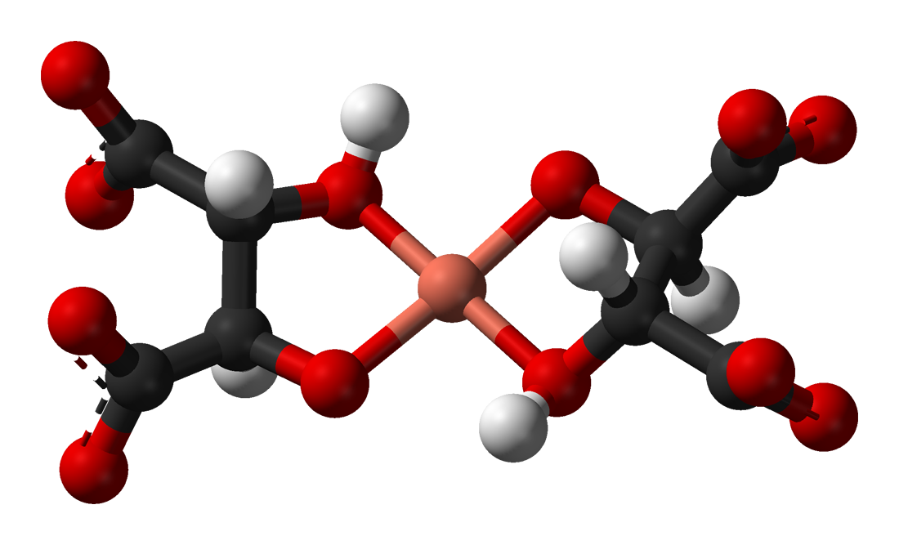
Benedict's reagent is similar to Fehling's, but contains citrate instead of tartarate anions, and sodium carbonate is used instead of sodium hydroxide. Citrate ligands prevent the formation of copper (II) carbonate. The charges of the two complexes are equal:
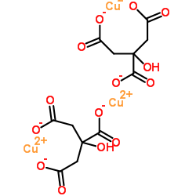 Testing procedure is the same for both reagents: a few drops of the compound are added to the reagent, and the mixture is warmed in the hot water bath. The positive test result for an aldehyde is the formation of a dark red precipitate of copper (I) oxide out of the deep blue solution. A ketone yields no change, unless it is an alpha-hydroxy ketone:
Moreover, aromatic aldehydes do not give a positive result due to the stabilising effect of resonance in the benzene ring. The results of the tests are shown in the images below:
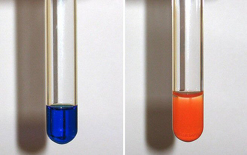
Fehling's reagent reacts with an a) ketone and b) aldehyde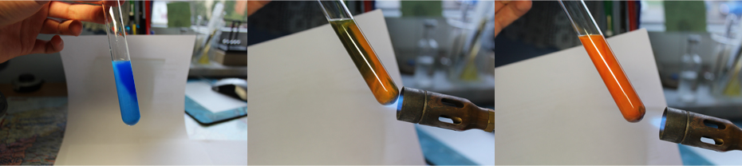
Benedict's reagent reacts with an aldehyde -
warm ammoniacal silver nitrate solution, called Tollen's reagent
for differentiation between aldehydes and ketones
Once presence of the carbonyl functional group has been established with 2,4-DNPH, Tollen's reagent can be used to differentiate between most ketones and aldehydes.
The test works due to the fact that aldehydes are more easily oxidised than ketones. The diamminesilver (I) complex in the reagent acts as an oxidising agent, while ammonia dissolves any silver oxide which may form in the process.
In a positive test, the aldehyde is oxidised to a carboxylate ion, while the elemental silver precipitates out of the solution due to the reduction of the silver nitrate. The silver occasionaly adsorbs to the inner surface of the vessel, forming a layer of silver mirror.
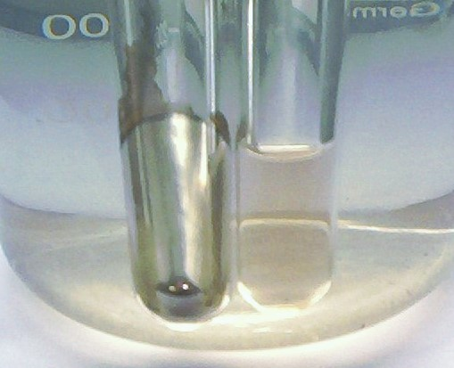 However, alpha-hydroxy ketones can give a false positive due to the stabilising affect of the oxygen in the hydroxyl group bonded to the alpha-carbon on the structure of the final product.
-
for -OH functional group
Solid phoshorous (V) chloride reacts vigorously with alcohols at RTP, producing clouds of poisonous acidic hydrogen chloride gas. Thus, it can be used as a test for the -OH group.
However, phosphorous (V) chloride is such a good oxidising agent that it will oxidise any compound with the -OH group. To show that some compound is an alcohol, we need to make sure first that the sample is not contaminated with water, and secondly it is neutral. If the solution containing a carbonyl compound is acidic and reacts with $PCl_5$ in the cold to give acidic steamy fumes, the solution almost certainly contains a carboxylic acid participating in the following mechanism: 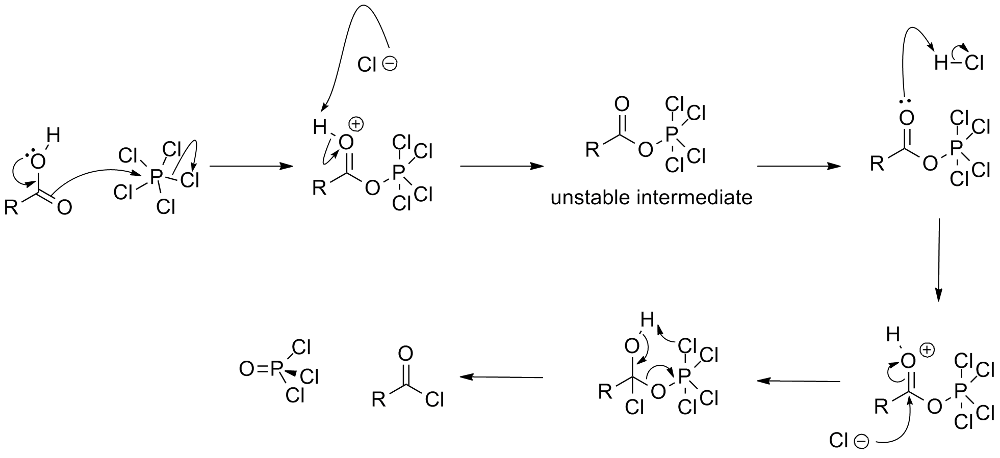
If the solution is pure and neutral and the reaction still takes place to produce steamy fumes, an alcohol is present. The reaction results in the aqueous mixture of phosphorous trichloride oxide and acyl chloride, which can be separated by fractional distillation.
-
acidified potassium dichromate (VI) solution
for aldehydes, primary and secondary alcohols
Aldehydes and different types of alcohols can be identified using their proneness to oxidation. The usual oxidation agent used for these tests is a solution of sodium or potassium dichromate (VI) acidified with the dilute sulphuric acid. If the oxidation takes place, the protonated dichromate (VI) anions are reduced to a green solution of chromium (III) cations.
To test for different kinds of alcohols, make sure that the tested solution is neutral, does not contain water, and reacts with phosphorous (V) chloride to produce acidic steamy fumes of hydrogen chloride. Then add a few drops of the alcohol under consideration to a test tube containing protonated dichromate ions and warm the mixture in the hot water bath.
Primary and secondary alcohols turn green, while there is no colour change for tertiary alcohols.
The result is similar for aldehydes, which are oxidised to the corresponding carboxylic acids.
-
carbonate or hydrogencarbonate solution
for carboxylic acids
Carbonates and hydrogencarbonates can be used to test for carboxylic acids. The procedure is easy to conduct safely and the resultant fizziness is easy to detect visually.
Reaction between a carboxylic acid and a carbonate or hydrogen carbonate is an acid-base reaction. A salt forms together with water and carbon dioxide, which explains the fizziness of the resultant solution. The difference in vigour between the carbonate or hydrogencarbonate reaction with a carboxylic and their reaction with hydrochloric acid is small.
Nevertheless, the vigour of the reaction does depend on the carbonate: its size, shape, phase and polarisation affect the rate.
-
for unsaturated hydrocarbons, enols and phenols
Discolouration of bromine water indicates that the tested compound contains unsaturated hydrocarbon, enol or phenol.
There is an advantage in using water as a solvent in this reaction: increased polarity enhances the stability of the intermediate in the reaction and hence speed it up. Additional catalysts are not required.
The hydroxyl group in phenols activates the benzene ring toward the reaction with the electrophilic bromine. One of the lone pairs of the oxygen atom in -OH overlaps with the delocalised electrons in the ring, hence increasing the electron density and proneness to the electrophilic attack. The -OH group activates the ring in a special manner: incoming groups tend to assume the 2, 6 (next to the carbon with -OH) and 4 (opposite the carbon with -OH) position. This is because of the resonance structures formed due to the alcohol functional group, shown below:
Source: Alex Kuang ChenIn the reaction of bromine with phenol, white precipitate forms. Enols are different, and react with bromine via electrophilic substitution route. Both mechanisms are given below:
Source: Martha A. HassBromine water also reacts with alkenes and alkynes in an electrophilic addition reaction. The example reaction of ethene with bromine is shown below:
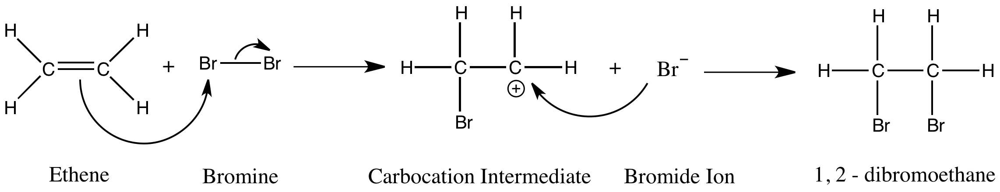
-
warm aqueous sodium/potassium hydroxide, dilute nitric acid and aqueous silver nitrate
for differentiation between halides
Unique colours of silver salts can be used to identify halides.
Sodium/potassium hydroxyde deprotonates the tested compound which then dissociates to give off the halide into the solution, while nitric acid prevents the formation of other non-halide precipitates. Silver nitrate is then added to give the following colours with chlorine, bromine, and iodine respectively:
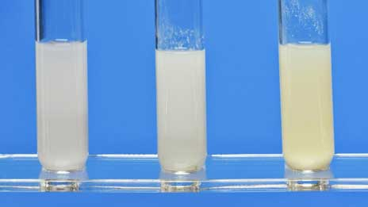 There is no coloured precipitate for the fluoride salts.
The identity of the precipitate can be confirmed by adding concentrated sulfuric acid or ammonia solution.
-
for alcohols, carboxylic acids and phenols
If a small piece of sodium is dropped into the beaker of alcohol, it will dissolve steadily to give off bubbles of hydrogen gas and leave a colourless solution of the corresponding alkoxide, which is structurally similar to the alcohol, but with sodium instead of hydrogen bonded to the oxygen. The white alkoxide can then be retreived by careful evaporation. Sodium metal is highly reducing, and forms caustic soda in the reaction with water. Therefore, to avoid false positives we have to make sure that there are no traces of water.
Sodium reacts violently with acids to produce a salt and hydrogen, hence the pH also should be checked. But carboxylic acids and their derivatives are not the only compounds encountered in high school organic chemistry acidic enough to react with sodium; phenol also works. Delocalisation of the negative charge around the benzene ring stabilises the phenoxide ion. However, since phenol is only a weak acid, the reaction is very slow.
To sum up, if there is some fizzing in the neutral solution on addition of metallic sodium, the tested compound is likely to be an alcohol. If the organic solution is acidic, it is likely to be a carboxylic acid or a phenol.
-
warm carboxylic acid with a few drops of concentrated sulphuric acid
for alcohols
When a carboxylic acid is heated with an alcohol in presence of an acid catalyst, a corresponding ester forms. Esters are easily recognised by their characteristic smell.
The esterification reactions are both slow and reversible. The general equation is given below:
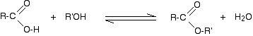
Source: chemguideDecanting a solution at equilibrium into water helps to intensify the ester smell. Apart from the very small ones, esters are mostly insoluble in water and hence form a thin layer on the surface, while excess acid and water readily diffuse through water.
-
for aromatic amines
Colourful diazonium compounds can be produced from aromatic amines in the reaction with nitric (III) acid, which is produced by dissolving sodium nitrite in dilute hydrochloric acid, and phenol. Let's look at phenylamine.
First, the solution of phenylammonium chloride is cooled in the beaker of ice. The solution of the nitrite is then added slowly, so that the temperature never goes over 5°C. The obtained solution contains the following ion:
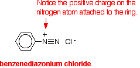
Source: chemguideThen cold phenol dissolved in NaOH is added to benzenediazonium chloride and the following reaction takes place:
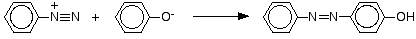
Source: chemguideThis is an example of coupling, in which the simplest yellow-orange azo compound forms.
-
for methyl ketones, ethanal, methyl secondary alcohol and ethanol
Iodine can be used to identify methyl ketone or ethanal, given that the tested solution is a ketone, or, if it is known that the tested compound is an alcohol, to test for methyl alcohol or ethanol. A positive result for all of them is a characteristic antiseptic smell and formation of a very pale yellow precipitate of triiodomethane, also known as iodoform.
The reaction with suitable alcohols proceeds in three stages. First, the alcohol is oxidised to aldehyde or a methyl ketone, while the iodine reacts with the sodium hydroxide to produce sodium iodate, a potent oxidising agent. Then the aldehyde or ketone formed reacts with iodine, and the product reacts with hydroxide ions. Thus, the overall reaction for the second stage is the following:
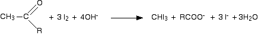
Source: chemguide